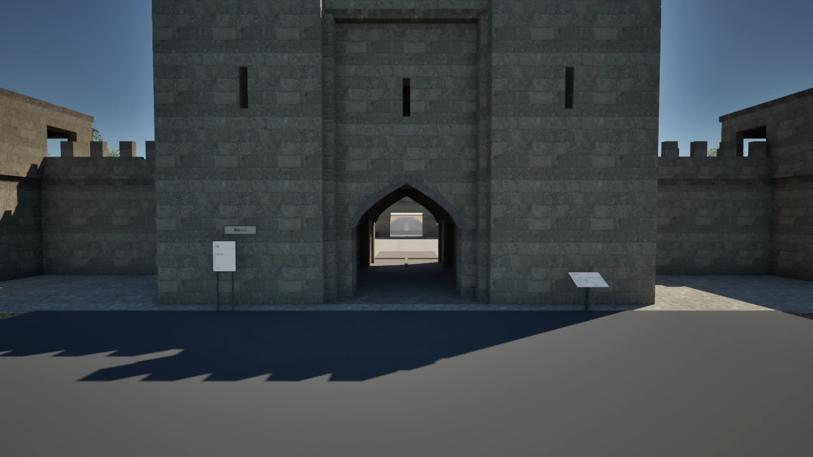
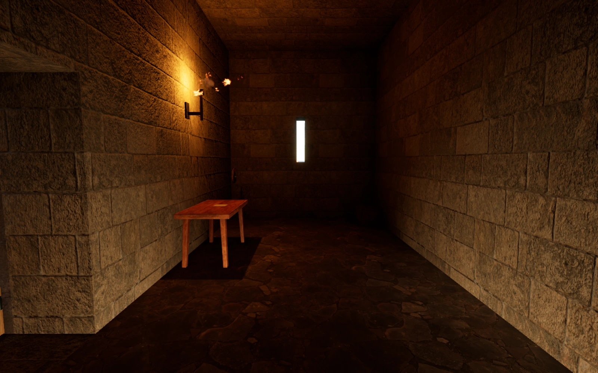
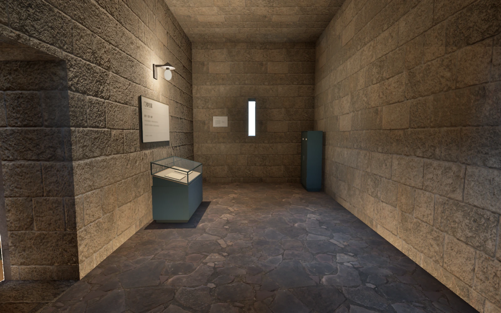

2026 Epic AI MegaJam · 第一人称叙事探索
叛徒的纪念馆THE TRAITOR’S MEMORIAL
走进展签之外的历史。
遗址维护员约瑟进入城门的过去，遇见正面临提前交接命令的守卫马林。居民尚未撤离；如今被称作破坏的动作，曾经意味着什么？在两个时代的同一处空间里，寻找展陈遗漏的上下文。

- 引擎
- Unreal Engine 5.8.1 · C++ / Blueprint
- 类型
- 单人 / 第一人称叙事与机关解谜
- 平台与阶段
- Windows 11 · 公开比赛原型
- 设计与开发
- YannisGames · 独立开发，AI 辅助
比赛项目：2026 Epic AI MegaJam主题：Director’s Cut · 2026 年 11 月
01 / 玩家体验
同一座城门，两种历史。
阅读现代展签与文书，回到古代参与救援和城门行动，再带着新的证据回看纪念馆中的叙述。一次往返、单线主线，以空间和行动补回被剪掉的历史。
- 巡检展台与文书
- 搬开货物，协助救援
- 观察并操作城门机关
- 回到现代，补充证据
02 / 设计重点
让理解来自玩家做过的事。
对应空间，改变解读
古代的值守桌、器械与物资，在现代变为展柜、铭牌和馆方叙述。熟悉的楼梯与走廊让玩家把两个时代联系起来。
救援要真正打开通道
营房一门封板，另一门被货物堵住。玩家逐件移走麻袋与箱子，让伤员和同伴获得可以离开的通道。
把主题落在历史的取舍上
纪念馆保留了一种说法。玩家参与被删去的撤离过程，随后登记复核材料；主题通过物件、人物处境与行动展开。
03 / 项目画面
陈设改变，空间仍可辨认。


以上为开发过程中的 UE 场景截图；图文日志另包含救援、机关、档案界面及 CG 制作过程。
04 / 比赛资料与下载
游戏、实机演示与图文开发日志。
Windows 比赛原型已在 itch.io 公开。完整解压 ZIP 后运行 Windows/TraitorsMemorial.exe，并保留所有文件夹。公开包说明为中文玩法文本、英文 CG 配音与字幕；完整游玩和性能仍需进一步验证。
中英文图文开发日志 · 各 12 页
从选题、古今场景，到救援返工、机关、界面和 CG 制作，记录设计如何改变。两份 PDF 保留制作时的 Transfer Memory 名称与历史版本说明；游戏正式发布名为 The Traitor’s Memorial。
操作：WASD / 鼠标移动与观察；E 交互，F 操作门；空格推进对白，长按约 1 秒跳过 CG；Tab 任务单，J 日志，P 暂停。
制作包含 AI 辅助代码、生成式 3D 资产、CG 与合成配音；图文日志说明具体分工和返工过程。